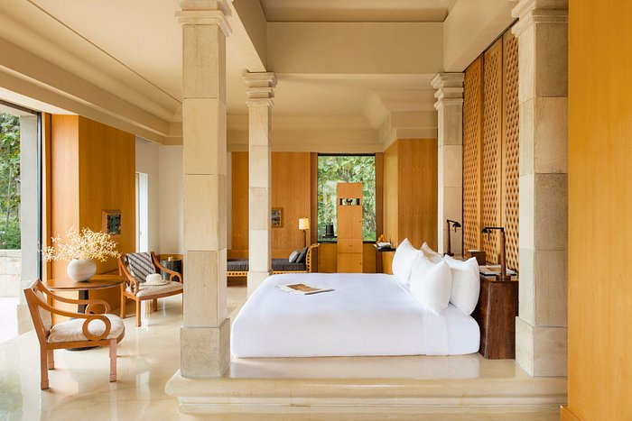

Amanjiwo Hotel
Amanjiwo adalah resort mewah yang terletak di Magelang, Jawa Tengah, yang menawarkan pemandangan spektakuler ke Candi Borobudur, salah satu situs warisan dunia UNESCO. Nama "Amanjiwo" sendiri berarti "kedamaian jiwa" dalam bahasa Sansekerta, sesuai dengan nuansa damai dan tenang yang ditawarkan oleh resor ini.